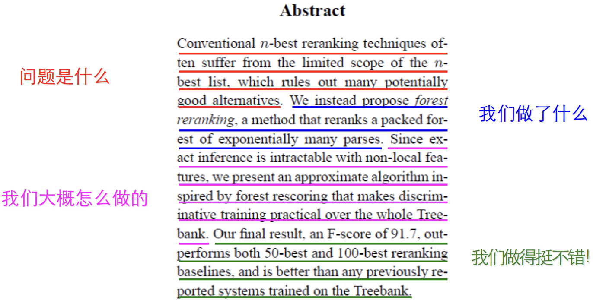

这篇文章是阅读清华大学刘洋老师在2014年第十届全国机器翻译研讨会上所做的有关学术写作与论文发表的报告(download)的笔记，并且将领域从机器翻译换到了情感分类，以下为正文。
此外，这篇文章处在持续完善过程中 ing…论文发表流程
- 确定方向： 情感分类
- 确定问题：利用情感词典加强文本的情感表示
- 确定思路：将辞典作为“监督信息” 来监督注意力生成过程
- 确定方法：用辞典形成的门监督attention权重。
- 实验验证：数据集、基线系统、评测指标
- 撰写论文：投稿一个近期会议（2个月、至多3个月之内的会议，切忌时间太久！）
选择方向
热门方向
- 优点：可利用的资源（论文，代码，教程，etc.）很多，相对容易上手。
- 缺点：千军万马过独木桥，你的点子可能早已经被别人想到。
冷门方向
- 优点：还是价值洼地，可摘取的低枝果实很多。
- 缺点：资源较少，入门相对费力。
选择的智慧就在于切中以下几个要点以及作出平衡（需要有经验的导师指导或者自己天赋异禀）：
- 重要问题、重大挑战
- 自己非常有兴趣
- 即将成为热门（这个需要有判断力和深厚的学术功底才可以做到，比如你的导师）
- 高风险性（自己可否承担？）
解决问题
独立思维
先思考，再去查找文献互相印证
语言学意义
具有语言学理论、心理学理论的支撑，符合语言学、心理学角度的直觉。
数学意义
使用数学工具做形式化，不臆造公式。
简洁优美
简单、干净、优美
确定思路与方法
像外行一样思考，像内行一样实践。
| 思考 | 实践 | 境界 |
|---|---|---|
| 外行 | 专家 | 独树一帜、炉火纯青 |
| 专家 | 专家 | 经验丰富、男脱窠臼 |
| 外行 | 外行 | 天马行空、眼高手低 |
| 专家 | 外行 | 思维僵化、束手无策 |
论文撰写概述
写论文时什么最重要?
审稿人时如何审稿的？
你认为应该是这样的：
审稿人是领域专家，无所不知。打印出来，认真仔细读你的文章，反复琢磨句子含义，推敲公式。在花了审稿人大量时间之后，终于明白了你工作的意义并认可它，最后决定给你一个border line或以上的分数。
而真实情况下，审稿人往往是这样做的：
他很可能不是领域专家，一直很忙拖着没有审稿，在deadline到来之前一天需要完成n篇文章的审稿任务。 他往往先看题目、摘要，扫一下 Introduction以便了解你做什么，然后直接翻到最后找核心实验结果（性能好不好？），然后基本确定录还会不录（也许只需要5～10分钟！）。如果决定录，剩下的就是写一些赞美的话，指出一些次要的小毛病。如果决定❌，下面的过程就是仔细看中间的部分找理由拒了。
总结起来就是：第一印象定录拒，5分钟内说服审稿人！
来自微博上的佐证，
观念必须转变
以作者为核心整理工作 $\Longrightarrow$ 以读者为核心阐述工作- 信息的呈现符合读者的认知习惯
- 深入浅出
- 引人入胜
- 让读者可以最快速地找到想要的信息
- 尽量降低读者的理解难度
- 合理恰当地综合使用信息要素：图->曲线->表->正文->公式
- 语言简洁明快，切忌超长复杂句式频繁出现！
- 尽量提高读者阅读时的舒适度
- 思想新颖、符合直觉
- 组织合理、逻辑严密、论证充分
- 文笔优美、排版美观
阅读与写作的关系
阅读与写作的区别：层次分明，角度不同决定优先级不同，如下图所示。
作者在写文章时，要将思想-信息-论文完美地统一起来，而不要让读者感到各个部分时割裂的。在写作时大致应当遵循下述规律：
- 对自己的思想做个摘要简化，得出最核心的部分
- 通过实验得出那些可以反应自己思想的信息
- 用论文的形式承载这些信息，合理组织以清楚、充分地表达作者思想
降低信息理解难度是关键
论文撰写技巧
这部分，按照一篇完整学术论文的组成部分，分别介绍各个部分的写作技巧。
标题写作技巧-Title
标题的重要性
- 如何查看浩若烟海的文献？
- 根据标题过滤 50%
- 根据摘要再过滤 20%
- 根据介绍再过滤 20%
- 剩下的10%，才是需要仔细看的论文
例子：
- 用一句话概括你所做的工作
- 考虑搜索引擎的影响，包含关键字
- 可以适当地别出心裁
- 也要冒一定风险
摘要的写作技巧-Abstract
核心：几句话概括你的工作！
误区
- 力图把所有细节说清楚
- 用很专业的术语来描述
- 出现数学符号！
用语要简单，让外行能看懂！！！
经典示例

介绍的写作技巧-Introduction
- 比题目和摘要要更进一步，用几段话说清楚你的工作
- 要点是充分论证你所做工作的必要性和重要性，要让审稿人认同并且迫不及待想往下看。
- 兴文逻辑严密，论证充分。
经典逻辑
最 常见的逻辑:
- 说明问题是什么❓
- 简单罗列前人工作
- 描述我们的工作
此外更好的逻辑:
- 说明问题是什么❓
- 目前最好的工作面临什么挑战❓
- 我们的方法可以缓解上述挑战
例子：
问题
挑战
我们的工作
段落的写法
- 每一个段落都有一个论断性的中心句
- 其余部分都是支撑句，围绕中心句展开论证
- 前人工作
- 具体数据
- 支撑句之间可分类组织
- 段尾可加上衔接句
例子：
中心句与支撑句
衔接句
支撑句论证要严密
新技巧
- 首页放置一个图或者表，让读者一目了然你所做的工作
- 不要去写 “This paper is organnized as follows. Section 2…”, 而是直接列出自己的贡献。
信息元素的易理解程度
读者潜意识里会优先选择更加易理解的信息元素首页加图表
信息流的变化
图和表的重要性
- 图和表示论文的骨架，争取要让读者按照顺序看就能理解论文的主要思想，不用通过正文才能看懂。
- 一般第一遍看，都会看图、找例子
- 然后翻到后面找主要结果
- 再从头看正文
- 把论文的元素放在最应该被放在的地方，符合读者的认知习惯，降低理解难度
直接列出自己的贡献
全局连贯性
方法的写作技巧（Method）
如何描述自己的方法至关重要，方法好而阐述的不好并不能让审稿人简单明了地理解你的核心思想，照样免不了被拒的命运!
- 不要一上来就描述你的工作，可以先介绍背景知识（往往就是baseline）
- 有利于降低初学者或其他领域学者的理解难度
- 有利于对introduction 中的论文做更加详细的解释
- 有利于对比baseline和自己的方法
Running Example 是超级利器
- 英语不好，感觉自己说不清楚？用例子！
- 全篇统一使用换一个running example，用来阐述你的方法（甚至是baseline）
- 围绕着running example, 展开描述你的工作
- 审稿人能从 running example中更舒服地了解你的工作，相反地，读正文会花掉他/她更多的时间
- 看完running example，审稿人便能知道核心思想。
方法描述中的逻辑顺序
杜绝如下 错误的 顺序
- 上来就是形式化描述
- 紧接着，开始解释数学符号
采用如下正确的顺序
- 首先给出running example
- 然后利用 running example，用通俗语言描述你的想法
- 最后才是形式化描述
例子

实验的写作技巧（Experiment）
实验设计
这是最重要的，因为这是做实验、写文章的根基。
- 公认的标准数据和state-of-the-art系统
- 实验先辅后主
- 辅助实验（开发集）：参数的影响
- 主实验（测试集）：证明显著超过baseline
- 必须有显著性检验（词条之前，经常缺失！）
- 不辞辛劳，做到极致
| 迭代方向 |
|---|
| minimum $\Longrightarrow$ solid $\Longrightarrow$ maximum |
例子：
先辅后主
用图的误区❌
用表的误区❌
Caption包含充分的信息
| 最好能直接看懂图，而不用去看正文！ |
相关工作的写作技巧（Related work）
首先要做到的是，明明白白，分清对错、禁忌。
| 错误❌ | 正确✅ |
|---|---|
| 没有引用重要论文（可以直接作为rejection的理由） | 向审稿人显示你对本领域具有全面深刻的把握 |
| 简单的罗列和堆砌，缺乏深刻到位的评论 | 通过与前人工作的对比凸显你的工作的创新性 |
| 通过批评乃至攻击前人工作，证明自己的创新 | 为读者梳理领域的发展脉络，获得全局性的认知 |
例子：
讲明研究方法最初灵感来源
方法的传承与创新（！）
附录的写作技巧
- 并非必须，但是对于读者深入理解你的工作有帮助，并且往往非常形式化
- 证明
- ”鸡肋“
- 恰当地使用附录能显著提升论文的可读性，降低审稿人信息获取的难度。
例子
写作常见文法和格式问题
常见问题大致分为以下几个类型：
- 句子过长
- 经常使用被动句
- 结构松散、口语化
- 不定冠词和定冠词的使用
- 公示后面文字的缩进
- 引用的写法
引以为戒的重要例子：
句子过长
被动句式+弱动词
结构松散+口语化+缺乏力度
a 还是 an？用不用 the？
公式的缩进
其他问题
- 论文中每个数学符号都应当找得到定义，除非众所周知，比如：$\pi$ . 永远不要不加说明的使用数学符号。
- 要避免数学符号冲突，使用符号列表
- 不要生造术语，尤其是中式译法，尽量符合惯例
- 集成所有信息元素，排版美观和专业
提高英语写作的窍门
- 找著名学者（尤其是 native speaker）的的论文钻研，学习句式和词汇用法，做笔记！
- 写作时手边放一部纸质的词典，经常翻看
- 拿不准的地方找Google：双引号查询
例子
句式和造句
利用搜索引擎
必须掌握的工具
- Latex
- 强烈建议用 LaTex代替Word
- Bibtex
- 自动生成参考文献列表
- MetaPost
- 编程画矢量图
例子：MetaPost
英文写作进阶
一本严肃、高质量的关于科技写作的书是你所必须的。
时间管理和获得反馈
- 由粗到细
- 截稿前一个月开始写
- 每隔两天改一次
- 听取不同背景读者的反馈意见
- 专家：专业意见
- 非专家：发现信息壁垒
- 写到极致，完成完美精致的艺术品
总结
最后这部分对之前所涉及的内容做一个概括：
- 写论文的本质是分享思想，传递信息
- 信息的传递必须符合读者-审稿人的认知习惯
- 全心全意为读者服务，降低阅读难度，提高阅读快感
- 细节决定成败
- 不要本末倒置：创新至上，技法为辅！
建议，每次写一篇新的文章，从最早的确定问题和思路开始，就应当严格依照此文进行规划和写作，力求做到精益求精，把自己的思想传递给读者-审稿人！